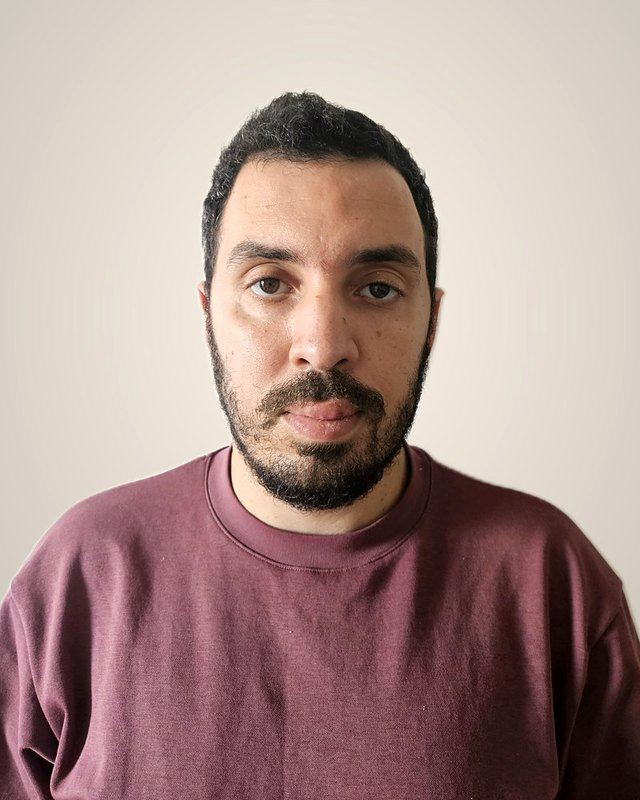

14 ans de Java, dont 11 dans les systèmes d’information de grandes banques françaises. Je conçois l’architecture de systèmes critiques et j’encadre leur réalisation : carte et paiement mobile, lutte contre la fraude, flux temps réel avec Kafka. J’applique aussi l’IA générative au travail des équipes.
Indépendant, via ma société IAMINE TECH. Île-de-France ; à distance selon la mission.

Références
Six établissements bancaires en onze ans
LCLLutte contre la fraude
BforBankCarte et paiement mobile
Société GénéraleGestion documentaire
BPCE-ITCloud privé du groupe
BpifrancePortail de financement
Natixis Wealth ManagementBanque privée et conformité
Auparavant : Sopra Steria, pour la RATP et Île-de-France Mobilités (information voyageurs en temps réel).
Interventions
Trois situations où l’on fait appel à moi
01
Un flux critique à concevoir, ou à reprendre
Carte, paiement, fraude, échanges avec le core banking ou le mainframe : découpage en services, contrats d’interface, reprise sur erreur sans doublon.
Fait chez LCL
Un parcours de confirmation de fraude par le client : un rejeu ne déclenche jamais une seconde opposition de carte.
02
Une production lente ou fragile à redresser
Mesurer avant de modifier : traces de bout en bout, tests de charge, puis corrections ciblées sur l’architecture, le réseau ou la base de données.
Fait chez BforBank
Des temps de réponse réduits pour la tokenisation Apple Pay et Google Pay, sur un parcours où Visa impose ses délais.
03
L’IA à faire entrer dans le quotidien d’une équipe, sans risque
Des outils qui préparent le travail et une personne qui décide ; un modèle local dès que les données sont sensibles.
Fait en mission bancaire
Un agent d’analyse d’incidents, utilisé par les analystes métier et les développeurs.
En assistance technique, seul ou au sein de votre équipe, ou au forfait sur un périmètre défini.
Parcours
Six missions, et les choix techniques derrière chacune
Choisissez un établissement : le contexte, ma part et les choix techniques. Aucune donnée interne n’est publiée.
LCL · groupe Crédit Agricole
Déc. 2025 – aujourd’hui
Ingénieur Java senior, architecture applicative et de flux
Le contexte
Une opération carte, virement ou chèque jugée suspecte doit être confirmée par le client sur son téléphone, puis traitée sans retard.
Ma part
Conception et développement, avec l’équipe, des microservices Java de ce parcours de confirmation : flux Kafka à contrats Avro, API REST et échanges avec le mainframe.
Les choix techniques
Reprise sur erreur sans double effet : stratégie de retry Kafka, dead-letter rejouable et registre d’avancement. Chaque étape réussie est enregistrée et n’est jamais rejouée.
Modèle de résilience documenté, puis présenté aux autres équipes, pour les consommateurs Kafka qui enchaînent plusieurs appels externes.
Brique de transfert sécurisé de fichiers : Spring Batch, chiffrement, CFT.
Une banque en ligne : cycle de vie de la carte et paiement mobile, avec le processeur carte et Visa dans la boucle, et des délais de réponse imposés par le réseau.
Ma part
Architecture applicative et développement des microservices du cycle de vie de la carte (émission, activation, opposition, PIN) et de la tokenisation Apple Pay et Google Pay, en architecture hexagonale. Migration de Spring Boot 2 vers 3 et GraalVM Native Image.
Les choix techniques
Performance de la tokenisation : latences réseau tracées de bout en bout dans Dynatrace, microservices regroupés pour supprimer des appels intermédiaires, échanges requête-réponse sur Kafka remplacés par des appels HTTP directs, index PostgreSQL revus.
Arbitrage entre appels synchrones et Kafka : réponse immédiate là où Visa l’exige, traitement différé pour le reste.
Contrôle de solde entre la banque, le processeur carte et Visa : diagnostic des délais de réponse et du recours à l’autorisation déléguée (stand-in).
Java 21 · Spring Boot 3 · Kafka Confluent · Schema Registry · REST / OpenAPI · GCP / GKE et sur site · ArgoCD · GitLab CI/CD · PostgreSQL · GraalVM · Datadog · Dynatrace
Société Générale
Juill. 2021 – déc. 2022
Team lead et développeur Java, API de gestion documentaire
Le contexte
Les API d’accès à la gestion documentaire de la banque de détail, au sein d’un train SAFe.
Ma part
Architecture des API Spring Boot et des traitements Spring Batch ; automatisation des déploiements, revue de code et intégration des nouveaux arrivants.
Les choix techniques
Tests de charge Gatling : goulots d’étranglement identifiés puis corrigés (pool de connexions saturé, requêtes lentes), temps de réponse réduits.
Java · Spring Boot · Spring Batch · MongoDB · stockage objet compatible S3 · Gatling · Jenkins
BPCE-IT
Oct. 2019 – juill. 2021
Tech lead, portail de cloud privé du groupe
Le contexte
Le portail de cloud privé du groupe, relié à plusieurs fournisseurs de cloud public, pour savoir à tout moment qui a commandé quoi et le refacturer au juste coût.
Ma part
Microservices Spring Boot sans état, développés en TDD ; flux de provisionnement automatisé et de gestion multi-fournisseurs via RabbitMQ.
Les choix techniques
Architecture Event Sourcing / CQRS et machine à états du portail.
Développeur Java et team lead, KYC, notation du risque client et fédération d’identité
Le contexte
Une banque privée : connaissance client (KYC), notation du risque client (LCB-FT, exigences ACPR) et fédération d’identité SAML.
Ma part
Applications de la banque privée (notation du risque client, complétude KYC, espace client mobile) ; fédération d’identité avec un fournisseur SAML (OpenSAML) ; services de souscription d’assurance-vie.
Les choix techniques
Règles de conformité isolées du reste du code en architecture hexagonale, donc testables seules.
Java · Spring · JBoss · SQL Server · OpenSAML
Auparavant (2012 – 2015) : développeur Java chez Sopra Steria, pour la RATP et Île-de-France Mobilités, sur l’information voyageurs en temps réel (Apache Camel, ActiveMQ). Master MIAGE, Université Nice Sophia Antipolis.
Études de cas
Trois réalisations en détail
IAMINE Compta · en usage
Un exercice comptable rejoué, au centime près
La comptabilité en partie double de ma société, branchée sur une API bancaire. Les opérations sont importées automatiquement et les écritures, chaînées, ne peuvent plus être modifiées a posteriori. Un exercice complet rejoué donne le même compte de résultat que celui du cabinet comptable.
PostgreSQL · Kafka · Quarkus / GraalVM
Liam Medical · livré en mars 2026
Un logiciel de cabinet médical dont l’IA reste locale
Conçu seul et livré à un cabinet : patients, consultations et ordonnances, avec la reprise de tout l’historique de l’ancien logiciel. L’assistance par IA s’exécute en local et elle est livrée désactivée : le dossier d’un patient ne part jamais vers un service d’IA en ligne, et le médecin relit et valide chaque proposition.
Java 21 · Spring Boot 3 · PostgreSQL
Agent d’analyse d’incidents · en mission bancaire
Un premier diagnostic d’incident sans mobiliser un développeur
Conçu à mon initiative, avec l’outil d’IA autorisé par le client. Un analyste métier ou un développeur le lance à la demande : l’agent croise les journaux, les tickets, la supervision et le registre des images déployées, s’appuie sur la documentation fonctionnelle, puis rend un diagnostic. L’IA propose, une personne décide.
Assistant de code en mode agent · serveurs MCP
Méthode
Ma façon de travailler
La solution la plus simple qui tient le délai
En paiement mobile : une réponse synchrone là où Visa impose un délai, Kafka pour tout le reste. Je retiens ce qui tient en production.
Le neuf se branche sur l’existant
Mainframe, core banking, processeur carte : je les intègre par des contrats d’interface explicites et testés.
En production, rien ne reste invisible
Rejeu sans doublon, dead-letter supervisée, alertes sur les échecs : une erreur doit se voir et se rattraper.
Compétences
Ce que je maîtrise, par domaine
Carte, paiement et fraude
Cycle de vie de la carte : émission, activation, opposition, PIN
Tokenisation Apple Pay et Google Pay
Diagnostic du contrôle de solde (banque, processeur carte, Visa)
Fraude carte, virement et chèque ; contestation client
Pour une mission d’assistance technique, envoyez-moi la fiche de mission. Pour un projet au forfait, vous recevrez une proposition écrite : périmètre, livrables et critères d’acceptation.